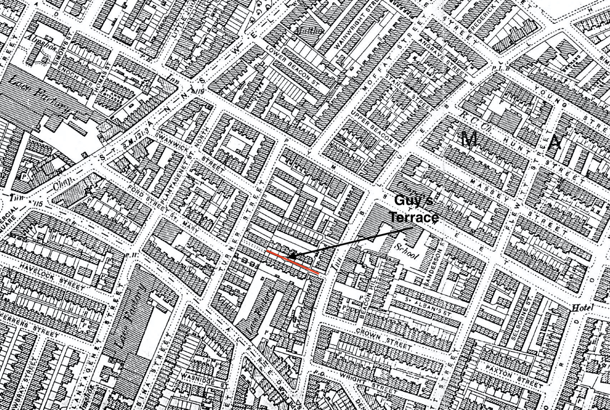
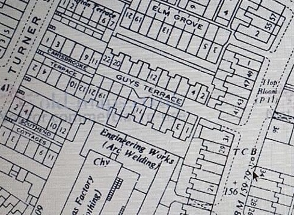
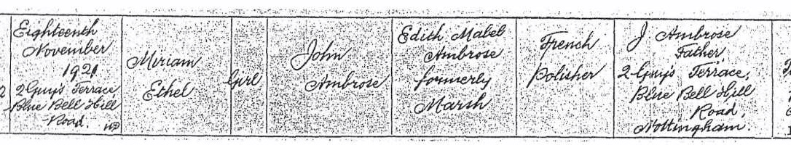
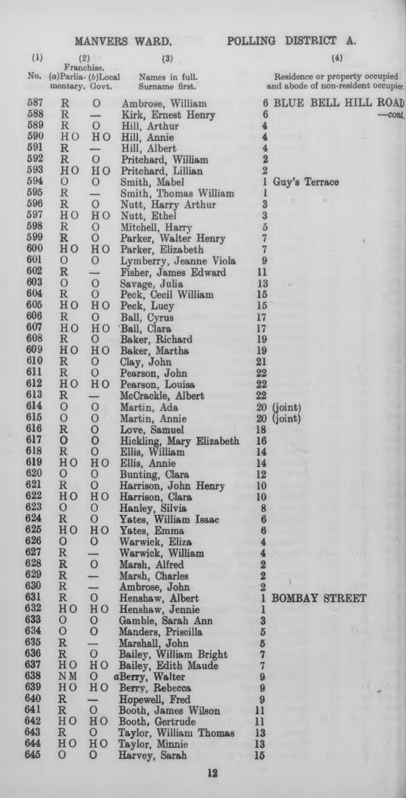
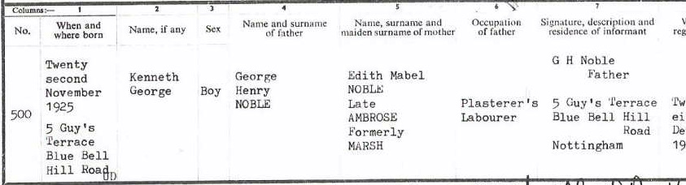
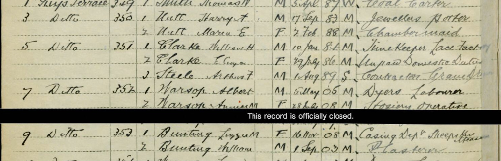
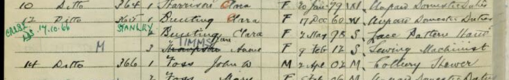
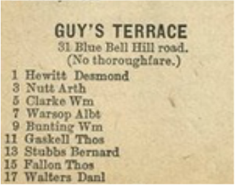
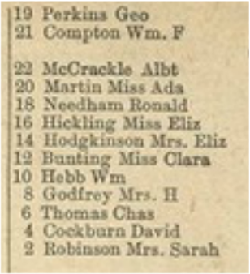
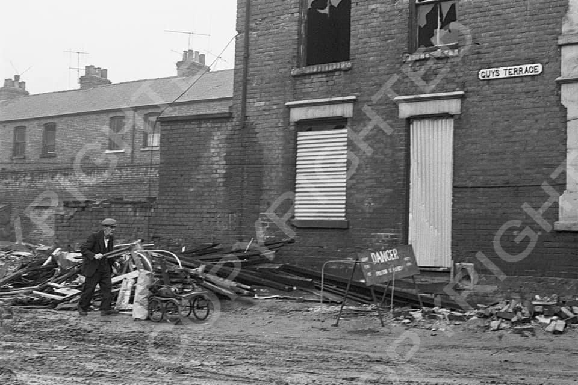

Guys Terrace, in the St Anns area of Nottingham, was home to members of our Noble , Marsh and Bunting families during the first half of the 20th Century.
Guys Terrace was situated between Bluebell Hill Road and Turner Street, close to the junction with Crown Street. All of this area has now been completely redeveloped and many of the street names have been lost. This part of Bluebell Hill is now called 'Beacon Hill Rise' and Guys Terrace would have been near what is now Kelvedon Gardens.
It was a court of twenty two 'two up two down' red-brick terraced houses set back from the road around a long blue brick yard.

Our earliest association with Guys Terrace is from about the time of the First World War and continues until the area was demolished in the 1960s.
William and Clara Bunting, parents of Mary Ann Bunting , moved into No.12 Guys Terrace, from Gordon Street some time between 1915 and 1918. The property was advertised for rent in the Evening Post in September 1915. It was described as a "comfortable house, large yard, 4/9". Living with William and Clara were their two youngest children William and Clara and their grandchildren William and George Noble . William and George Noble's parents, Thomas and Mary Ann , had died within two months of each other in 1914/15 so the boys were taken in by their mothers parents.
At about the same time in 1915 Ethel Marsh married Harry Arthur Nutt and they settled at No.3 Guys Terrace. In about 1918 they were joined by Ethel's father, Charles Marsh, who moved to No.2 Guys Terrace from Newark Street, Sneinton (where he was living at the time of the 1911 Census). Charles was a widower and living with him at this time were his children Edith and Alfred. No.2 was on the opposite side of the court to Ethel at No.3.

In 1921 Edith Marsh met and married her first husband Jack Ambrose who was living in the neighbouring court, Elm Grove. They moved in together with Edith's father, Charles, at No.2 and it was at No.2 that their child, Miriam Ambrose, was born in November 1921.

At some point in 1922 the property next door to Ethel, No.5, became available and her brother Alfred Marsh moved in with his new wife, Florence. At about the same time they were joined by Jack, Edith and Miriam and shortly after this Jack died at No.5, leaving Edith to fend for their 7 month old daughter. It appears that Edith and Miriam were living with her brother Alfred and his wife from 1922 until about 1926, when Alfred and Florence moved to Corporation Street. In 1923 Charles Marsh also left Guys Terrace and returned to Sneinton.

Guys Terrace would have been a close knit community and the Bunting and Marsh families could have known each other very well. By 1925 Edith Ambrose was pregnant with the child of George Noble and in the May of that year Edith and George were married and George moved from No.12 to No.5. On 22 November 1925 their first son, Ken Noble , was born at No.5. In 1931 the Noble family left Guys Terrace having been allocated a new council house in Wendover Drive, Aspley.

Ethel and Harry Nutt remained at No.3 throughout the Second World War and up to Ethel's death at No.3 Guys Terrace in August 1955. Her husband Harry died at No.3 Guys Terrace in May 1961, 46 years after they first moved into the house together.


The Bunting family also continued to live at No.12 Guys Terrace. William Bunting (snr) died in 1932 and his wife Clara (snr) lived at No.12 until her death in 1952 at the age of 91. Their daughter Clara (jnr) remained at No.12 after her parents death, eventually marrying Horace Stanley in 1965.

William and Clara's youngest son, William (jnr) married Lizzie White in 1932 shortly after his fathers death. After their marriage the couple moved into No.9 Guys Terrace. They lived there throughout the war and the 1950s until Williams death in 1965.


Guys Terrace was demolished some time in the late 1960's as part of a major slum clearance programme that demolished much of the St Anns area of Nottingham.
